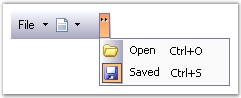

This section discusses the interactive features available in the CommandBar control.
Chevron
The term "chevron" is used for a menu that contains the toolbar icons that do not fit in the space available on the toolbar.
Table 10: Chevron
|
CommandBar Property |
Description |
|
ChevronColor |
Gets / sets the color of the chevron. |
|
HideChevron |
Indicates whether the CommandBar should be drawn without a chevron. |
|
IsChevronVisible |
Indicates whether the chevron is currently visible. |
|
[C#]
this.commandBar1.ChevronColor = System.Drawing.Color.Black; this.commandBar1.HideChevron = false; this.CommandBar1.IsChevronVisible = true |
|
[VB.NET]
Me.commandBar1.ChevronColor = System.Drawing.Color.Black Me.commandBar1.HideChevron = False Me.CommandBar1.IsChevronVisible = True |
The following screen shot displays the chevron in the CommandBar.

Figure 19: CommandBar with Chevron
 Note: The chevron will be visible only
when the toolbar icons do not fit in the space available in the toolbar.
Normally it will not be displayed.
Note: The chevron will be visible only
when the toolbar icons do not fit in the space available in the toolbar.
Normally it will not be displayed.
A sample which demonstrates the Chevron settings of the CommandBar control is available in the below sample installation path.
..My Documents\Syncfusion\EssentialStudio\Version Number\Windows\Tools.Windows\Samples\2.0\CommandBars Package\CommandBars